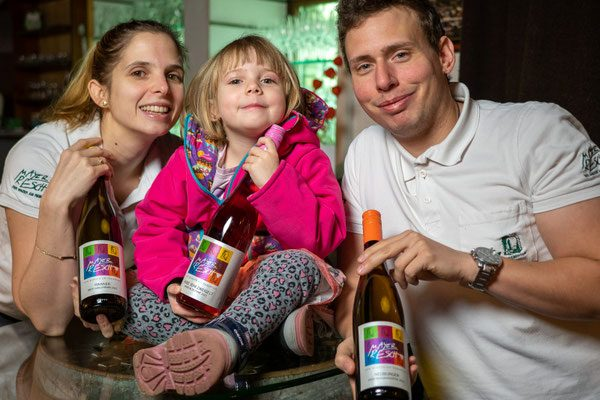
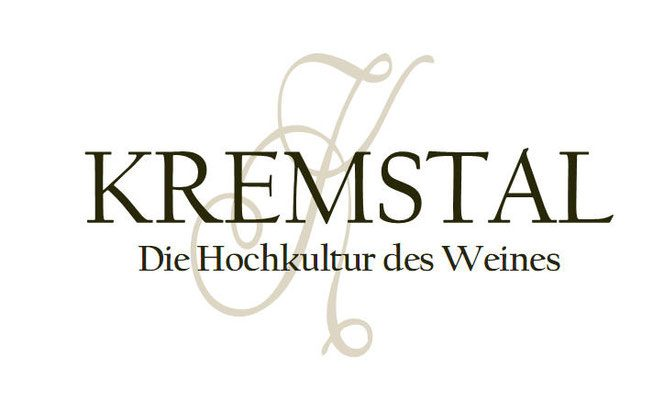

Neu ab 1. April 2026
Mein Wein-Apartment
Fünf neue Apartments direkt am Weingut in der Steiner Kellergasse – für den Urlaub in Wachau und Kremstal genauso wie für den beruflichen Aufenthalt in Krems.

Ausstattung
Rund 20 m², alles da
Alle fünf Apartments sind gleich ausgestattet.
Schlafen
Ein großes Boxspring-Doppelbett.
Klimaanlage
Auch im Hochsommer angenehm kühl.
Kleine Küchenzeile
Mit Kaffeemaschine, Mikrowelle und Herdplatte.
Eigenes Bad
Mit WC und Dusche.
TV & WLAN
Im ganzen Apartment verfügbar.
Größe
Jedes Apartment misst rund 20 m².
Gut zu wissen
Buchungsbedingungen
| Verfügbar ab | 1. April 2026 |
|---|---|
| Anzahl | 5 Apartments |
| Größe | jeweils ca. 20 m² |
| Mindestaufenthalt | buchbar ab 2 Nächten |
| Haustiere | leider nicht gestattet |
| Frühstück | bieten wir selbst nicht an – viele Kaffeehäuser liegen in unmittelbarer Nähe |
| Adresse | Steiner Kellergasse 40, 3500 Krems/Stein |
| Anfrage | über das Formular unten oder telefonisch unter +43 650 88 91 920 |

Rundherum
Was Sie von hier aus erreichen
Das Weingut liegt in Stein, dem ältesten Teil von Krems – eingebettet zwischen der Donau im Süden und den Steiner Weinbergen im Osten. Wer sich von der alten Stadtmauer leiten lässt, kommt zum Rebentor, das uns gegenüberliegt.
- Buschenschank im eigenen Haus – an den Aussteckterminen
- Durstlöschplatzerl mit gekühltem Wein- und Sektsortiment, täglich 6:00–24:00 Uhr
- Riedenwanderungen, Kellerführungen und Weinverkostungen nach Vereinbarung ab 10 Personen
- Rätselrallyes am Steiner Weinberg und in der Steiner Altstadt
- Blick auf Stift Göttweig vom Gastgarten aus
Buchungsanfrage
Apartment anfragen
Buchbar ab zwei Nächten. Wir melden uns mit Verfügbarkeit und Preis zurück.